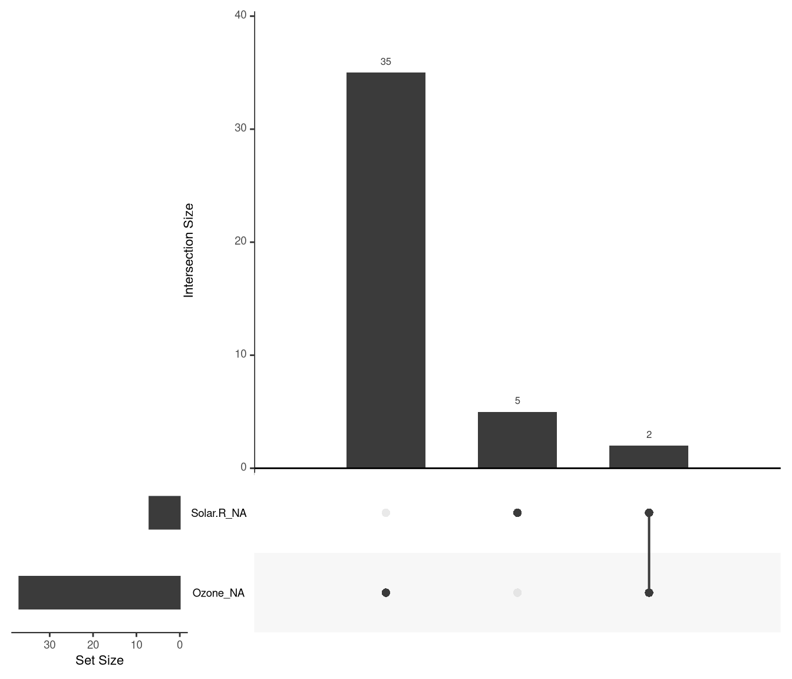
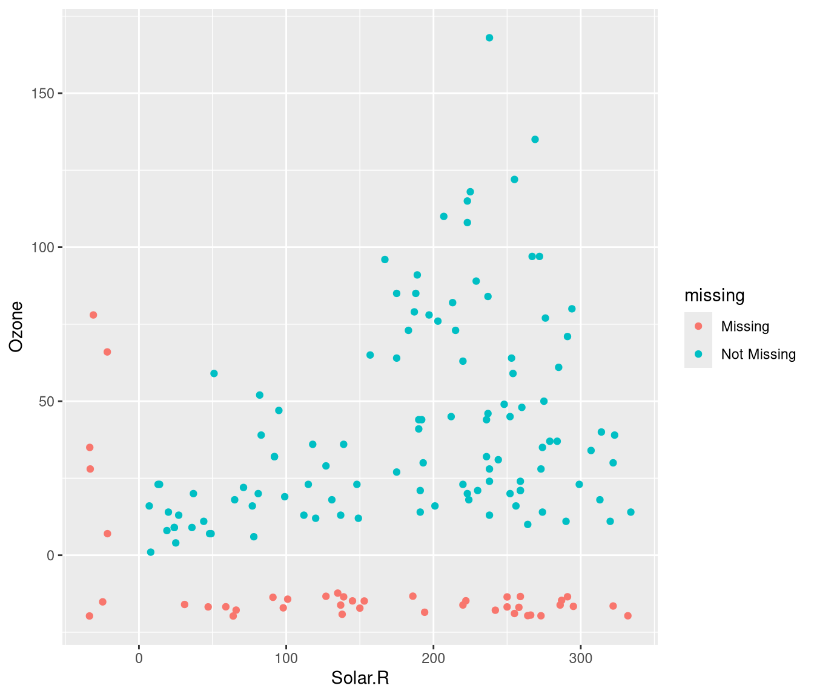
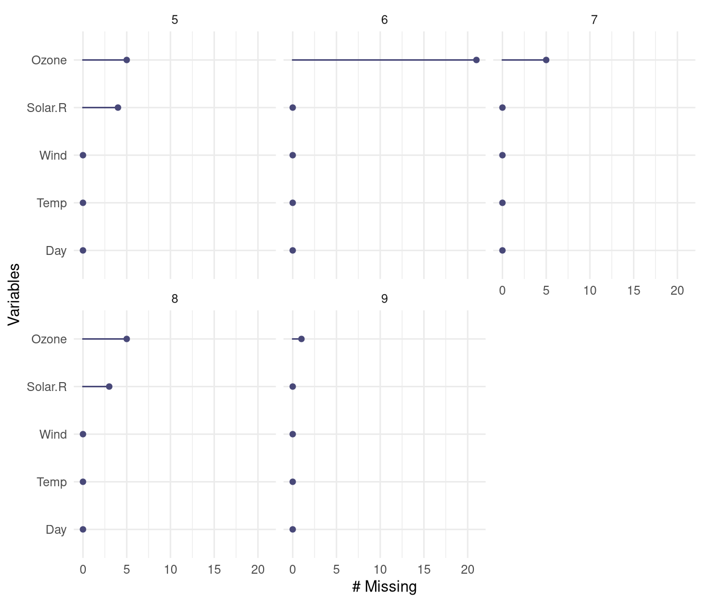

4.2 Manipulación de datos con dplyr y tidyr
En esta sección se realiza una breve introducción al paquete dplyr y se comentan algunas de las utilidades del paquete tidyr que pueden resultar de interés5.
La referencia recomendada para iniciarse en esta herramienta es el Capítulo 5 Data transformation de R for Data Science. También puede resultar de utilidad la viñeta del paquete Introduction to dplyr o la chuleta (menú de RStudio Help > Cheat Sheets > Data Transformation with dplyr).
4.2.1 El paquete dplyr
La principal ventaja de dplyr es que permite trabajar (de la misma forma) con datos en distintos formatos:
data.frame,tibble.data.table: extensión (paquete backend)dtplyr.conjuntos de datos más grandes que la memoria disponible: extensiones
duckdbyarrow(incluyendo almacenamiento en la nube, e.g. AWS).bases de datos relacionales (lenguaje SQL, locales o remotas); extensión
dbplyr.grandes volúmenes de datos (incluso almacenados en múltiples servidores; ecosistema Hadoop/Spark): extensión
sparklyr(ver menú de RStudio Help > Cheat Sheets > Interfacing Spark with sparklyr).
El paquete dplyr permite sustituir operaciones con funciones base de R (como subset, split, apply, sapply, lapply, tapply, aggregate…) por una “gramática” más sencilla para la manipulación de datos.
En lugar de operar sobre vectores como la mayoría de las funciones base,
opera sobre conjuntos de datos (de forma que es compatible con el operador %>%).
Los principales “verbos” (funciones) son:
select(): seleccionar variables (ver tambiénrename,relocate,pull).mutate(): crear variables (ver tambiéntransmute()).filter(): seleccionar casos/filas (ver tambiénslice()).arrange(): ordenar casos/filas.summarise(): resumir valores.group_by(): permite operaciones por grupo empleando el concepto “dividir-aplicar-combinar” (ungroup()elimina el agrupamiento).
NOTA: Para entender el funcionamiento de ciertas funciones (como rowwise()) y las posibilidades en el manejo de datos, hay que tener en cuenta que un data.frame no es más que una lista cuyas componentes (variables) tienen la misma longitud.
Realmente las componentes también pueden ser listas de la misma longitud y, por tanto, podemos almacenar casi cualquier estructura de datos en un data.frame.
En la primera parte de este capítulo consideraremos solo data.frame por comodidad.
Emplearemos como ejemplo los datos de empleados de banca almacenados en el fichero empleados.RData (y supondremos que estamos interesados en estudiar si hay discriminación por cuestión de sexo o raza).
En la Sección 4.5 final emplearemos una base de datos relacional como ejemplo.
4.2.2 Operaciones con variables (columnas)
Podemos seleccionar variables con select():
## id sexo minoria tiempemp salini salario
## 1 1 Hombre No 98 27000 57000
## 2 2 Hombre No 98 18750 40200
## 3 3 Mujer No 98 12000 21450
## 4 4 Mujer No 98 13200 21900
## 5 5 Hombre No 98 21000 45000
## 6 6 Hombre No 98 13500 32100Se puede cambiar el nombre (ver también rename()):
## sexo noblanca salario
## 1 Hombre No 57000
## 2 Hombre No 40200
## 3 Mujer No 21450
## 4 Mujer No 21900
## 5 Hombre No 45000
## 6 Hombre No 32100Se pueden emplear los nombres de variables como índices:
## sexo fechnac educ catlab salario
## 1 Hombre 1952-02-03 15 Directivo 57000
## 2 Hombre 1958-05-23 16 Administrativo 40200
## 3 Mujer 1929-07-26 12 Administrativo 21450
## 4 Mujer 1947-04-15 8 Administrativo 21900
## 5 Hombre 1955-02-09 15 Administrativo 45000
## 6 Hombre 1958-08-22 15 Administrativo 32100## id salini tiempemp expprev minoria sexoraza
## 1 1 27000 98 144 No Blanca varón
## 2 2 18750 98 36 No Blanca varón
## 3 3 12000 98 381 No Blanca mujer
## 4 4 13200 98 190 No Blanca mujer
## 5 5 21000 98 138 No Blanca varón
## 6 6 13500 98 67 No Blanca varónSe pueden emplear distintas herramientas (selection helpers) para seleccionar variables (ver paquete tidyselect):
starts_with,ends_with,contains,matches,num_range: variables que coincidan con un patrón.everything,last_col: todas las variables o la última variable.where(): a partir de una función (e.g.where(is.numeric))
Por ejemplo:
## sexo salario salini sexoraza
## 1 Hombre 57000 27000 Blanca varón
## 2 Hombre 40200 18750 Blanca varón
## 3 Mujer 21450 12000 Blanca mujer
## 4 Mujer 21900 13200 Blanca mujer
## 5 Hombre 45000 21000 Blanca varón
## 6 Hombre 32100 13500 Blanca varónPodemos crear variables con mutate():
## id sexo minoria tiempemp salini salario incsal tsal
## 1 1 Hombre No 98 27000 57000 30000 306.12245
## 2 2 Hombre No 98 18750 40200 21450 218.87755
## 3 3 Mujer No 98 12000 21450 9450 96.42857
## 4 4 Mujer No 98 13200 21900 8700 88.77551
## 5 5 Hombre No 98 21000 45000 24000 244.89796
## 6 6 Hombre No 98 13500 32100 18600 189.795924.2.3 Operaciones con casos (filas)
Podemos seleccionar casos con filter():
## id sexo minoria tiempemp salini salario
## 1 14 Mujer Sí 98 16800 35100
## 2 23 Mujer Sí 97 11100 24000
## 3 24 Mujer Sí 97 9000 16950
## 4 25 Mujer Sí 97 9000 21150
## 5 40 Mujer Sí 96 9000 19200
## 6 41 Mujer Sí 96 11550 23550Podemos reordenar casos con arrange():
## id sexo minoria tiempemp salini salario
## 1 378 Mujer No 70 10200 15750
## 2 338 Mujer No 74 10200 15900
## 3 90 Mujer No 92 9750 16200
## 4 224 Mujer No 82 10200 16200
## 5 411 Mujer No 68 10200 16200
## 6 448 Mujer Sí 66 10200 16350## id sexo minoria tiempemp salini salario
## 1 29 Hombre No 96 79980 135000
## 2 343 Hombre No 73 60000 103500
## 3 205 Hombre No 83 52500 66750
## 4 160 Hombre No 86 47490 66000
## 5 431 Hombre No 66 45000 86250
## 6 32 Hombre No 96 45000 110625Podemos resumir valores con summarise():
## sal.med n
## 1 34419.57 474Para realizar operaciones con múltiples variables podemos emplear across() (admite selección de variables tidyselect):
## id educ salario salini tiempemp expprev n
## 1 237.5 13.49156 34419.57 17016.09 81.1097 95.86076 474NOTA: Esta función sustituye a las “variantes de ámbito” _at(), _if() y _all() de versiones anteriores de dplyr (como summarise_at(), summarise_if(), summarise_all(), mutate_at(), mutate_if()…) y también el uso de vars().
En el caso de filter() se puede emplear if_any() e if_all().
Podemos agrupar casos con group_by():
## # A tibble: 4 x 4
## sexo minoria sal.med n
## <fct> <fct> <dbl> <int>
## 1 Hombre No 44475. 194
## 2 Hombre Sí 32246. 64
## 3 Mujer No 26707. 176
## 4 Mujer Sí 23062. 40empleados %>% group_by(sexo, minoria) %>%
summarise(sal.med = mean(salario), n = n(), .groups = "drop")## # A tibble: 4 x 4
## sexo minoria sal.med n
## <fct> <fct> <dbl> <int>
## 1 Hombre No 44475. 194
## 2 Hombre Sí 32246. 64
## 3 Mujer No 26707. 176
## 4 Mujer Sí 23062. 40# dplyr >= 1.1.0 # packageVersion("dplyr")
# empleados %>% summarise(sal.med = mean(salario), n = n(),
# .by = c(sexo, minoria))Por defecto la agrupación se mantiene para el resto de operaciones, habría que emplear ungroup() (o el argumento .groups = "drop") para eliminarla (se puede emplear group_vars() o str() para ver la agrupación).
Desde dplyr 1.1.0 (2023-01-29) está disponible un parámetro .by/by en mutate(), summarise(), filter() y slice() como alternativa a agrupar y desagrupar posteriormente.
Para más detalles ver Per-operation grouping with .by/by.
4.2.4 Datos faltantes
Continuamos con el ejemplo de la Sección @ref{missing}. tidyverse dispone de muchas herramientas para el tratamiento de los datos faltantes.
Visualización (amigable) de la estrutura de datos:
## # A tibble: 153 x 12
## Ozone Solar.R Wind Temp Month Day Ozone_NA Solar.R_NA Wind_NA Temp_NA
## <int> <int> <dbl> <int> <int> <int> <fct> <fct> <fct> <fct>
## 1 41 190 7.4 67 5 1 !NA !NA !NA !NA
## 2 36 118 8 72 5 2 !NA !NA !NA !NA
## 3 12 149 12.6 74 5 3 !NA !NA !NA !NA
## 4 18 313 11.5 62 5 4 !NA !NA !NA !NA
## 5 NA NA 14.3 56 5 5 NA NA !NA !NA
## 6 28 NA 14.9 66 5 6 !NA NA !NA !NA
## 7 23 299 8.6 65 5 7 !NA !NA !NA !NA
## 8 19 99 13.8 59 5 8 !NA !NA !NA !NA
## 9 8 19 20.1 61 5 9 !NA !NA !NA !NA
## 10 NA 194 8.6 69 5 10 NA !NA !NA !NA
## # i 143 more rows
## # i 2 more variables: Month_NA <fct>, Day_NA <fct>Distribución por variables de los datos faltantes:
## # A tibble: 3 x 3
## n_miss_in_var n_vars pct_vars
## <int> <int> <dbl>
## 1 0 4 66.7
## 2 7 1 16.7
## 3 37 1 16.7## [1] 0.2745098
Distribución conjunta de los valores faltantes para la radiación solar y ozono:
library(naniar)
library(ggplot2)
ggplot(airquality,
aes(x = Solar.R,
y = Ozone)) +
geom_miss_point()
Distribución mensual de los valores faltantes:

Otra alternativa (más rápida) es
data.tablepero en versiones recientes ya se puede emplear desdedplyr, como se comenta más adelante.↩︎